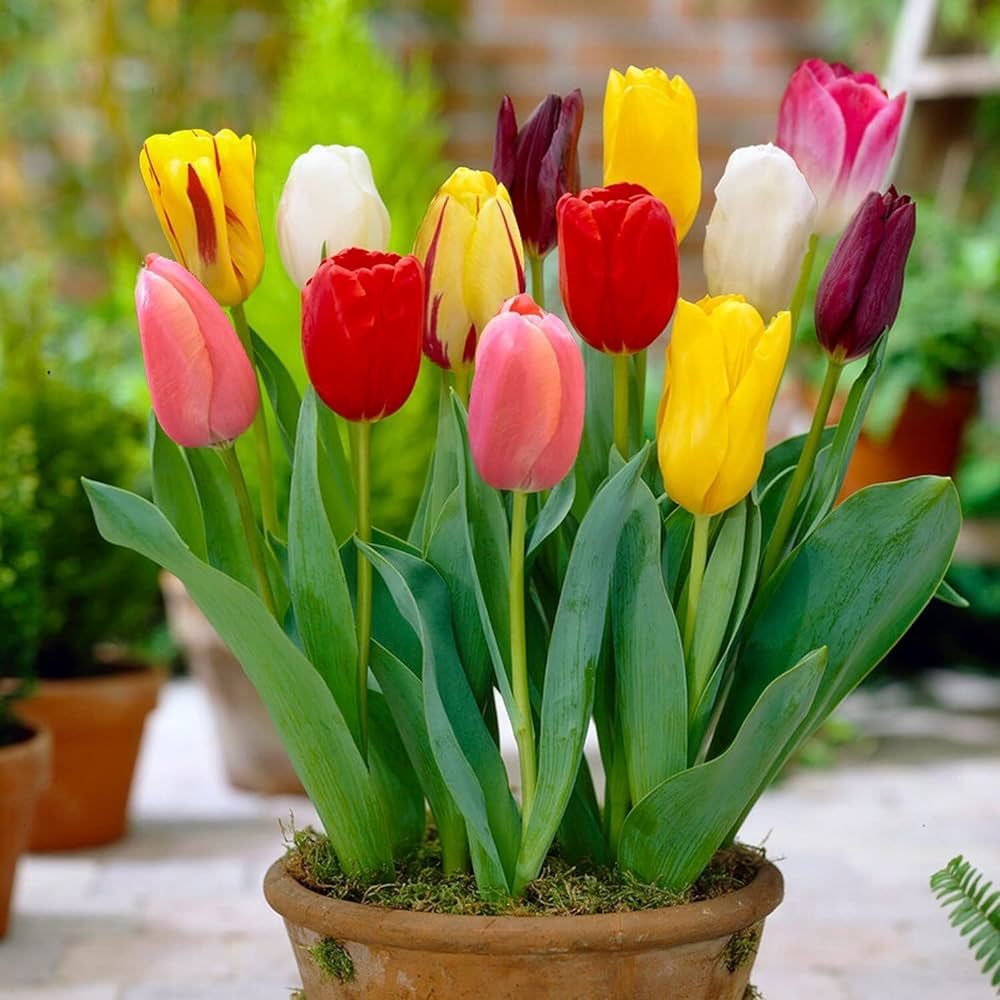

ROSE

Roses are beautiful flowers often used to convey love and affection.
TULIP
Tulips are known for their vibrant colors and are often associated with spring.
SUNFLOWER

Sunflowers are large, bright flowers that symbolize happiness and positivity.